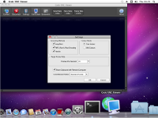

Grok VNC Viewer is a cross-platform VNC client. It meets the requirements for a portable application -- that means it requires no external libraries or other software, can be run from a USB flash drive, and doesn't make any changes at all to it's host computer. The zip file contains just a single executable (or app bundle, in the case of the Mac OS X version) - just unzip it somewhere convenient and run the app to use it.
The most common lossless VNC encoding methods are supported (RAW, CopyRect, RRE, and Hextile) and clipboard sharing between the local and remote hosts is supported.
It's currently available for Windows (in both 32- and 64-bit incarnations), and now Mac OS X. A picture's worth a thousand words, so to save my keyboard - here is a picture of it running on a Mac:-
(click to make it bigger, obviously)
Grok VNC Viewer - 2.0 - Windows 32-bit (2.00 MB)
Grok VNC Viewer - 2.0 - Windows 64-bit (2.18 MB)
Grok VNC Viewer - 2.0 - Mac OS X (2.58 MB)
If you're unsure which version to download, get the Windows 32-bit version unless your computer has a picture of a half-eaten apple on it, in which case get the Mac OS X version.
{kind=link}